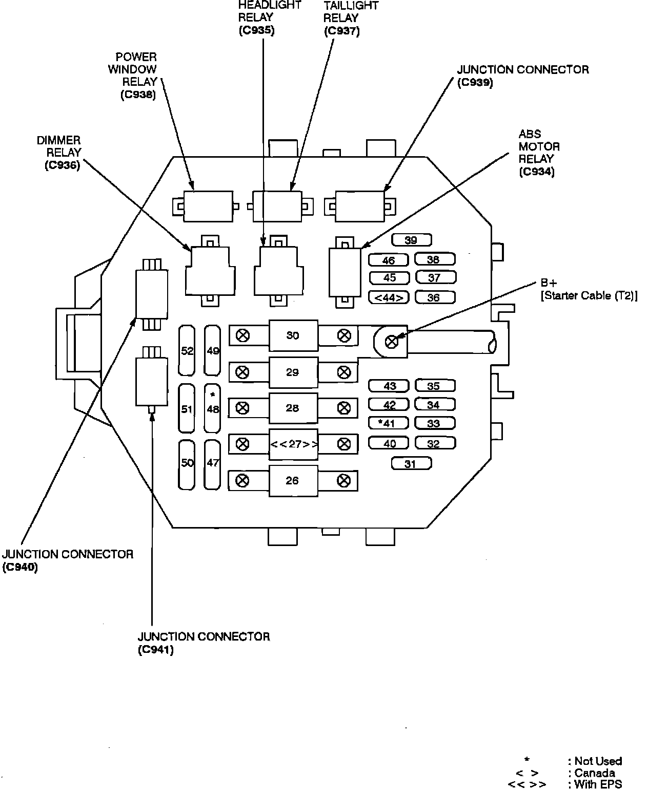
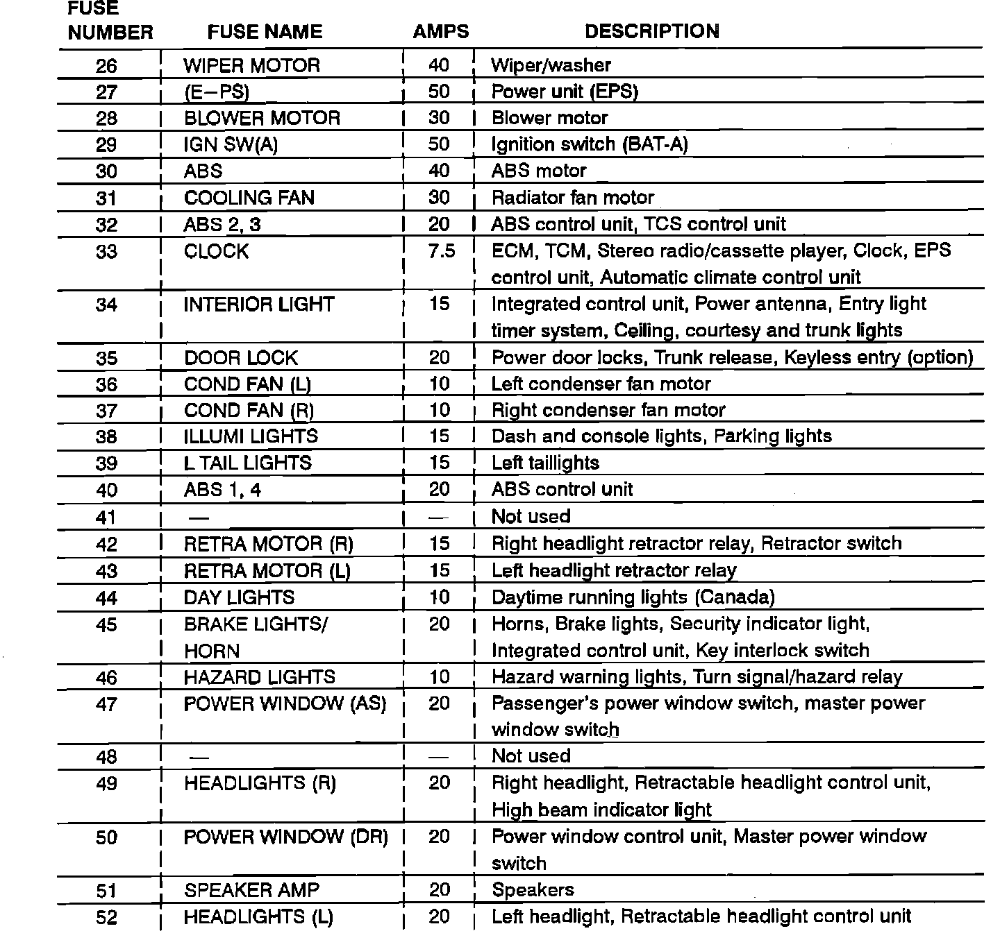
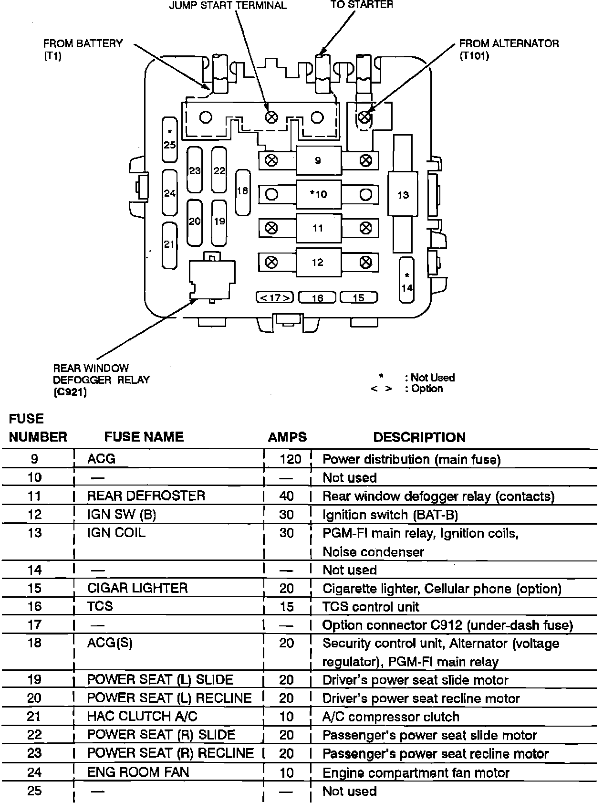

Operation CHARM
: Car repair manuals for everyone.
Home
>>
Acura
>>
1993
>>
NSX V6-3.0L DOHC
>>
Repair and Diagnosis
>>
Maintenance
>>
Fuses and Circuit Breakers
>>
Fuse Block
>>
Locations
>>
Under-Hood Fuse/Relay Box
Under-Hood Fuse/Relay Box
Under-hood Fuse/Relay Box:

Fuses And Protected Circuits:

Engine Compartment Fuse/Relay Box:
